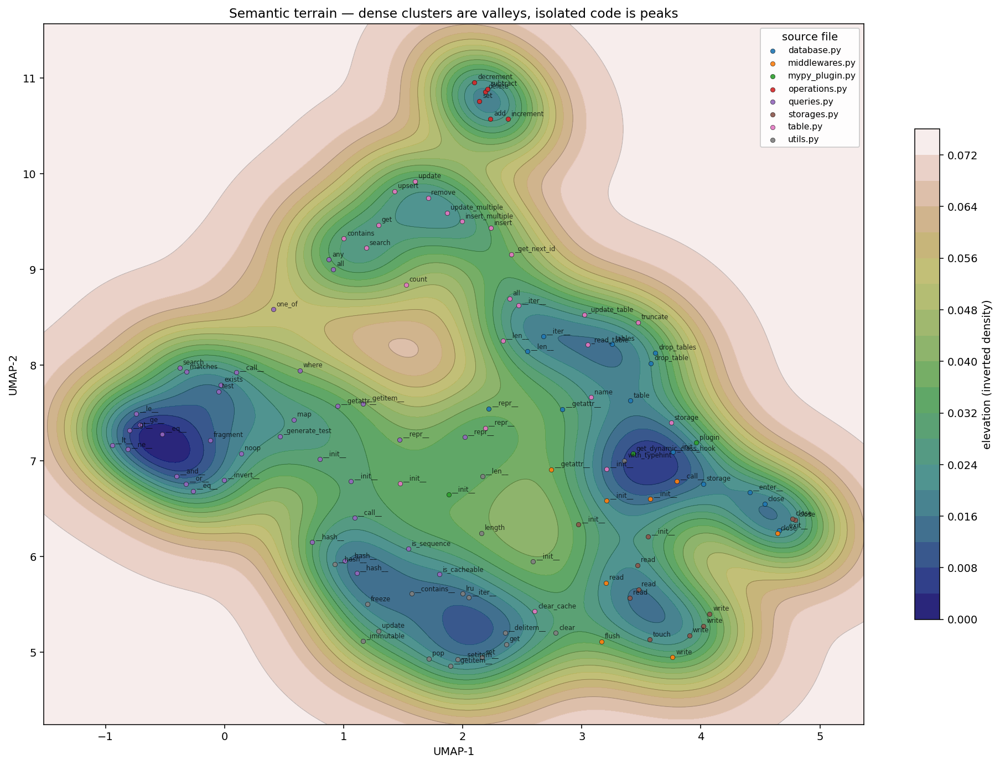
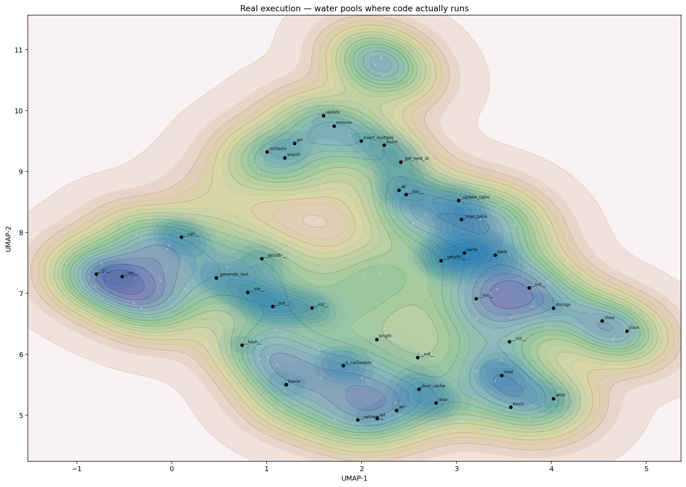
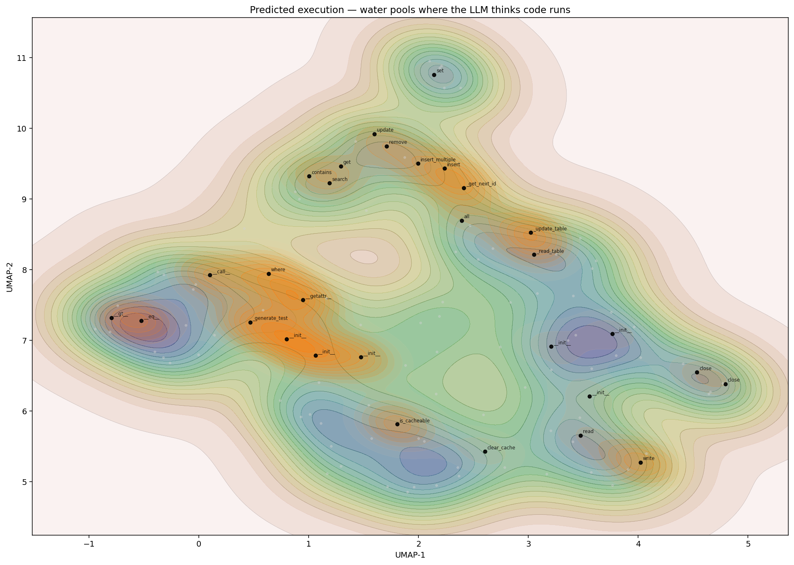
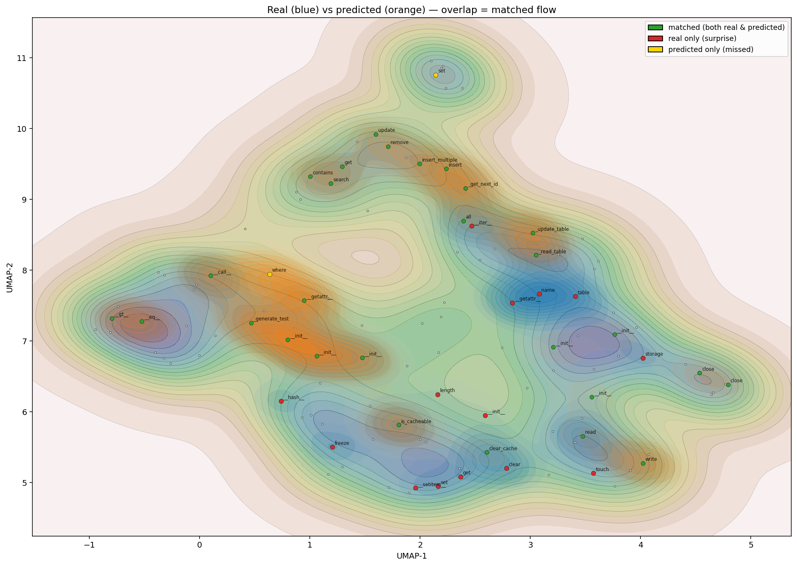
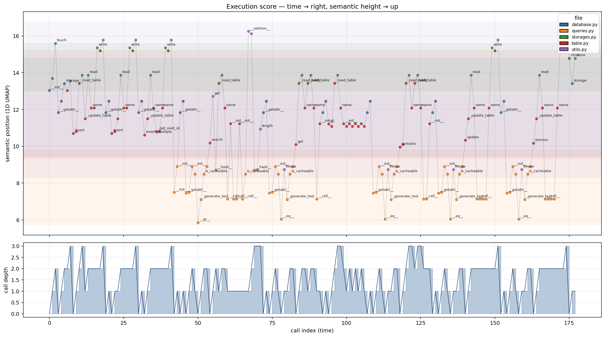
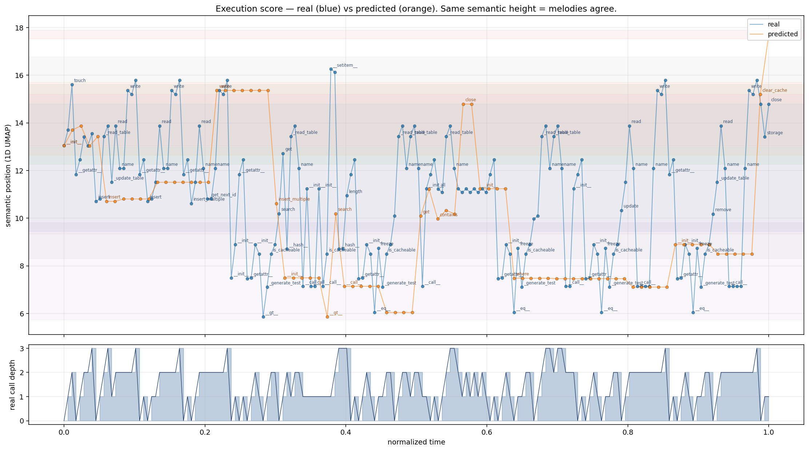

Context
We tested the hypothesis that a codebase can be meaningfully visualized by combining per-function code embeddings (where code lives semantically) with execution traces (what actually runs temporally). TinyDB was the subject — small enough to verify by eye, real enough to expose problems the toy codebase couldn't.
Terrain works
2D projection of 117 TinyDB functions. Inverted KDE: dense clusters = valleys (basins), isolated code = peaks. Points colored by source file.

You can read the shape of the codebase at a glance. operations.py
one-liners (increment, decrement, etc.) stand apart as peaks.
Table CRUD methods cluster as a valley. Queries live in their own region.
This is the first visualization where a newcomer could form a working mental model
without reading any code.
Water — real vs predicted works
Water pools where code ran. Blue = real trace (178 calls across 42 functions). Orange = LLM's prediction of what would fire (84 calls across 30 functions).


Divergence — the money shot works
Both water colors on one map. Points colored: green = matched, red = real-only (surprise), yellow = predicted-only (missed). Red dots are where reality diverges from the summary.

Red dots cluster at the bottom — Query.__hash__, Query.__call__,
LRUCache.get, Document.__init__, internal _read_table
and _get_next_id. These fire during normal TinyDB operations but a reader
(or an AI summary) wouldn't list them. This is the diagnostic angle for "is this code
doing what I expect?"
Execution score — time × semantic works
X = call index (time through the trace). Y = 1D semantic projection. Bottom = call depth. You're seeing the "rhythm" of a TinyDB session.

Repeated operations draw the same shape. The three
insert-related runs early in the timeline create a repeating sawtooth.
Query operations later produce a different, lower-band signature. A future call
that broke the expected shape would stand out visually.
Duet — real vs predicted melody mixed
Same score, but with the predicted trace overlaid in orange, time-normalized so the two sequences align proportionally.

You can see the two melodies occupy the same semantic range (LLM roughly has the right mental model) but real is much noisier (178 vs 84 calls, lots of helper oscillation). The shapes diverge in texture, not in "concept."
What we learned
✓ worked — per-function embeddings → inverted terrain → water overlay → divergence view → execution score. All carry real signal.
✗ retired — concat "tier" embeddings for flow encoding (passed on toy, failed on real code). Naive LLM next-step prediction (hallucinated, 20% agreement). General-purpose embeddings (style dominates domain). Normalized-time duet rendering (apples-to-oranges on timing).
~ needs rethink — divergence rendering on the score; depth of predicted traces; scale-up past ~200 functions.
v2 direction
Three guiding principles for v2:
- Two views, linked — map (terrain+water) and score (time+semantic) side by side. Click on one highlights on the other. Neither alone is sufficient.
- Interactive by default — scrub time, hover for code, click to jump to file:line, zoom to cluster. The product isn't a render — it's a surface.
- Traces are first-class — the entry-point picker (tests, routes, main) replaces the current brief-box. User picks what to run; the tool captures and tells the story.
Open question: does map+score alone work, or is a narrative/prose view still needed as a third lens for "why"?